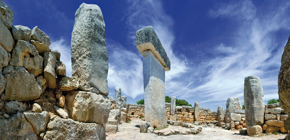

Vorgeschichte
Die Vorgeschichte Menorcas umfasst einen langen Zeitraum (ca. 2000 Jahre), der sich von der ältesten menschlichen Ansiedlung, 2100 v. Chr., bis zur Ankunft der Römer 123 v. Chr. spannt.
Während all dieser Jahrhunderte folgte die Insel einem Prozess, der durch die ständige Zunahme der Bevölkerung, der Komplexität der ökonomischen und sozialen Zusammenhänge und der Festivitäten und Bestattungsrituale gekennzeichnet ist. Schon von Beginn an (1700 v. Chr.) standen die Insulaner mit der Bevölkerung des Festlandes in Verbindung, und brachten vom Kontinent Objekte aus Bronze und andere Produkte nach Menorca.
 Es wurde ein umfangreiches Repertoire an Begräbnisstätten entdeckt, die im Laufe der gesamten Vorgeschichte entstanden sind, stets kollektive Gräber, in denen die Verstorbenen mit ihren Grabbeigaben bestattet wurden. Weltweit einzig in ihrer Art ist die emblematische Form der Naveta. Die bekannteste ist die Naveta des Tudons, wo 100 Menschen im 9. Jahrhundert v.Chr. mit speziellen Ritualen hinsichtlich der Behandlung von Haar und Schädel bestattet wurden.
Es wurde ein umfangreiches Repertoire an Begräbnisstätten entdeckt, die im Laufe der gesamten Vorgeschichte entstanden sind, stets kollektive Gräber, in denen die Verstorbenen mit ihren Grabbeigaben bestattet wurden. Weltweit einzig in ihrer Art ist die emblematische Form der Naveta. Die bekannteste ist die Naveta des Tudons, wo 100 Menschen im 9. Jahrhundert v.Chr. mit speziellen Ritualen hinsichtlich der Behandlung von Haar und Schädel bestattet wurden.
Die Monumente, dies sich am besten in die Insellandschaft einfügen, sind die Talaiots (900-700 v. Chr.), runde Türme, die aus losen Steinen auf der höchsten Erhebung der Siedlungen erbaut sind und deren vorrangige Funktion darin bestand, als landschaftliches Merkmal zur Identifizierung der Ansiedlung zu dienen.
 Gegen 700/650 v. Chr. beginnt die letzte Etappe der Vorgeschichte der Insel, mit dem Beginn der Eisenzeit. Es entstehen monumentale Rundhäuser und ein weiteres emblematisches und der Insel eigenes Bauwerk: der Taula-Vorhof, mit einem bis zu 4 Meter hohen Stein-T. Hier wurden verschiedene rituelle Feste abgehalten, mit Elementen wie dem Feuer, dem Wein (hauptsächlich von Ibiza) und dem Verzehr von Lämmern und kleinen Zicklein. Während dieser Epoche beteiligten sich die Balearischen Stein-Schleuderer innerhalb der Truppen Karthagos in den sogenannten Punischen Kriegen am Kampf gegen die Römer.
Gegen 700/650 v. Chr. beginnt die letzte Etappe der Vorgeschichte der Insel, mit dem Beginn der Eisenzeit. Es entstehen monumentale Rundhäuser und ein weiteres emblematisches und der Insel eigenes Bauwerk: der Taula-Vorhof, mit einem bis zu 4 Meter hohen Stein-T. Hier wurden verschiedene rituelle Feste abgehalten, mit Elementen wie dem Feuer, dem Wein (hauptsächlich von Ibiza) und dem Verzehr von Lämmern und kleinen Zicklein. Während dieser Epoche beteiligten sich die Balearischen Stein-Schleuderer innerhalb der Truppen Karthagos in den sogenannten Punischen Kriegen am Kampf gegen die Römer.